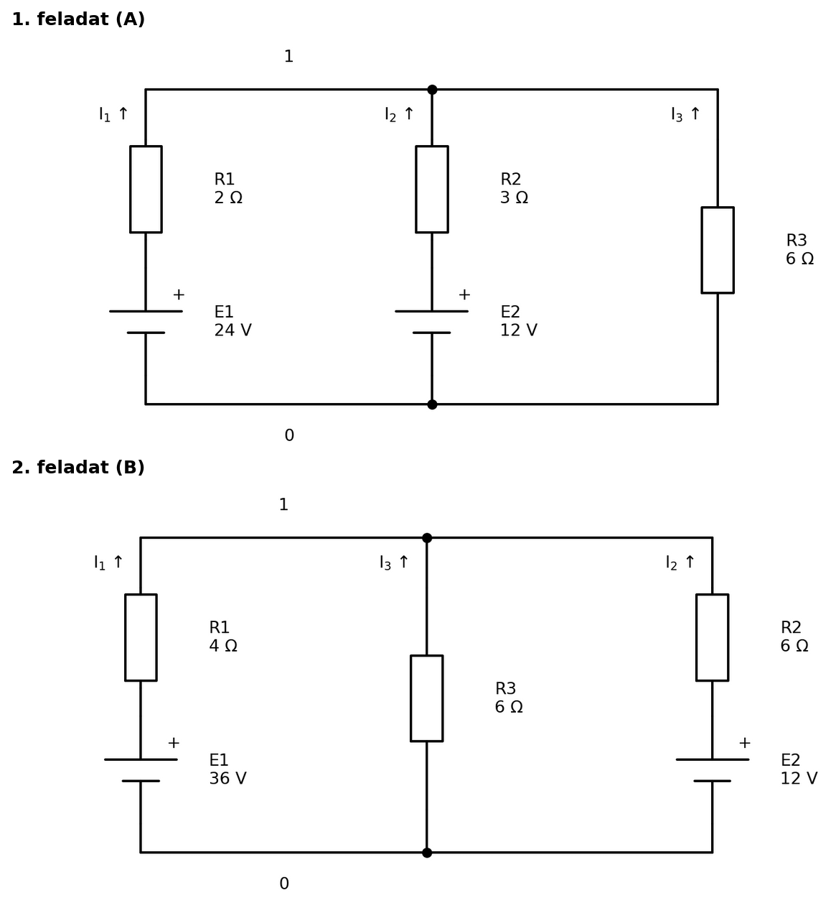
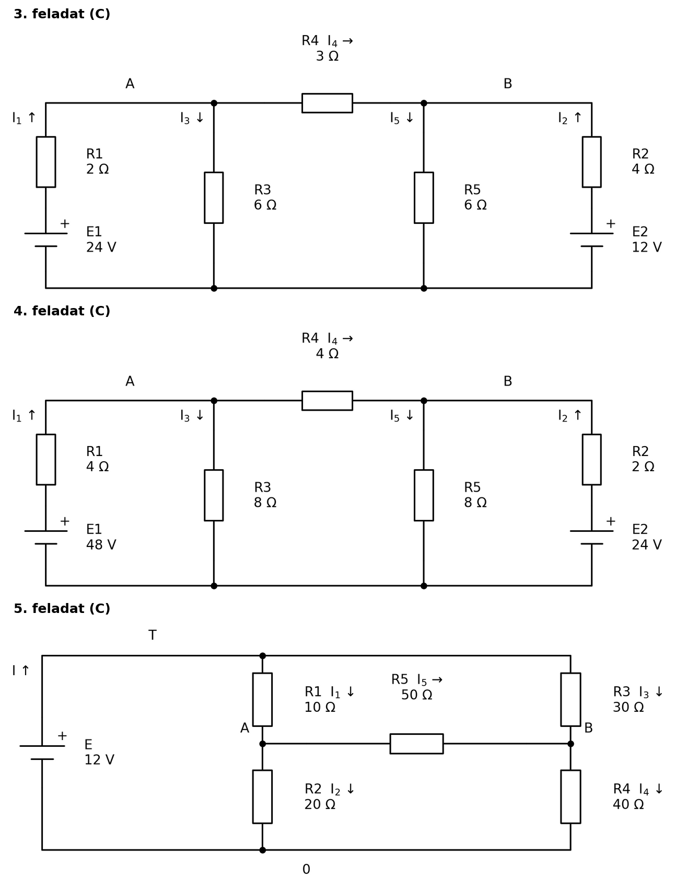
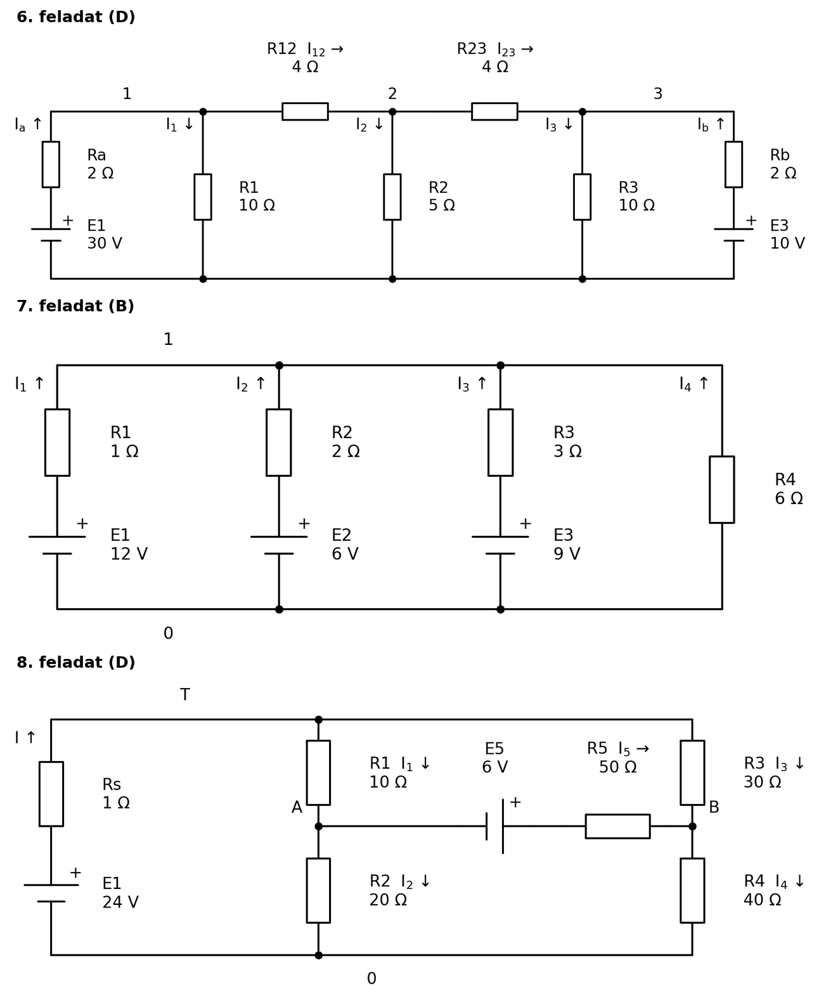
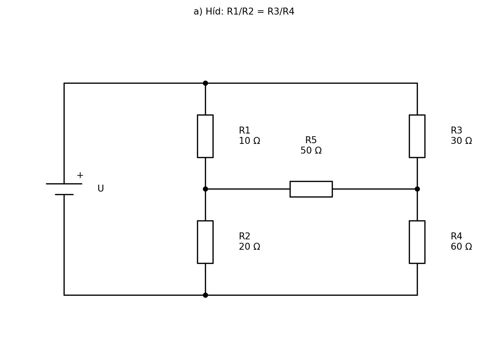
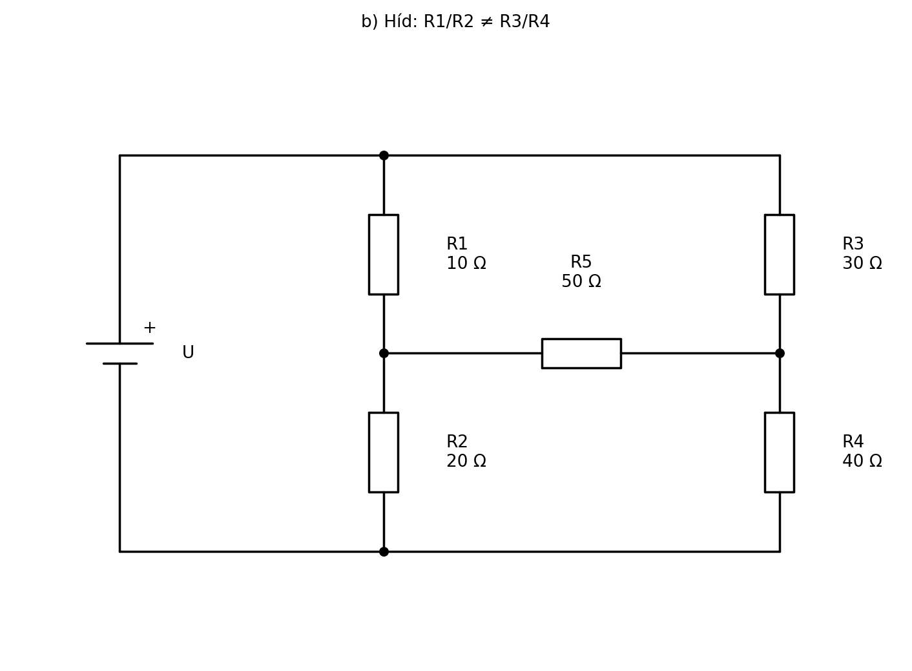
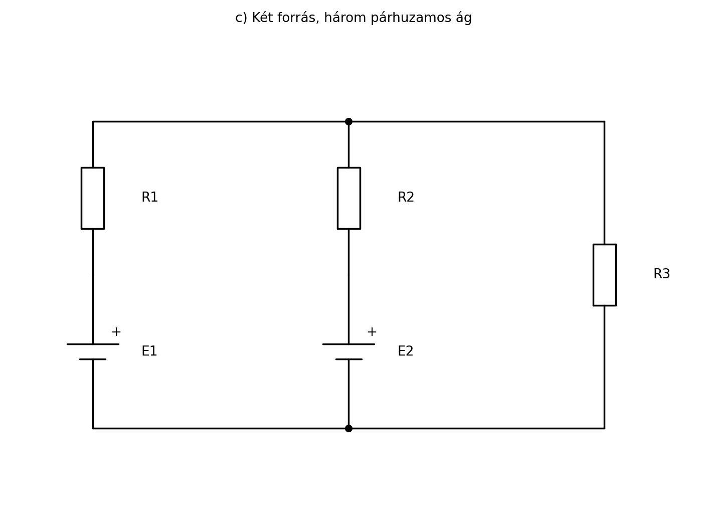
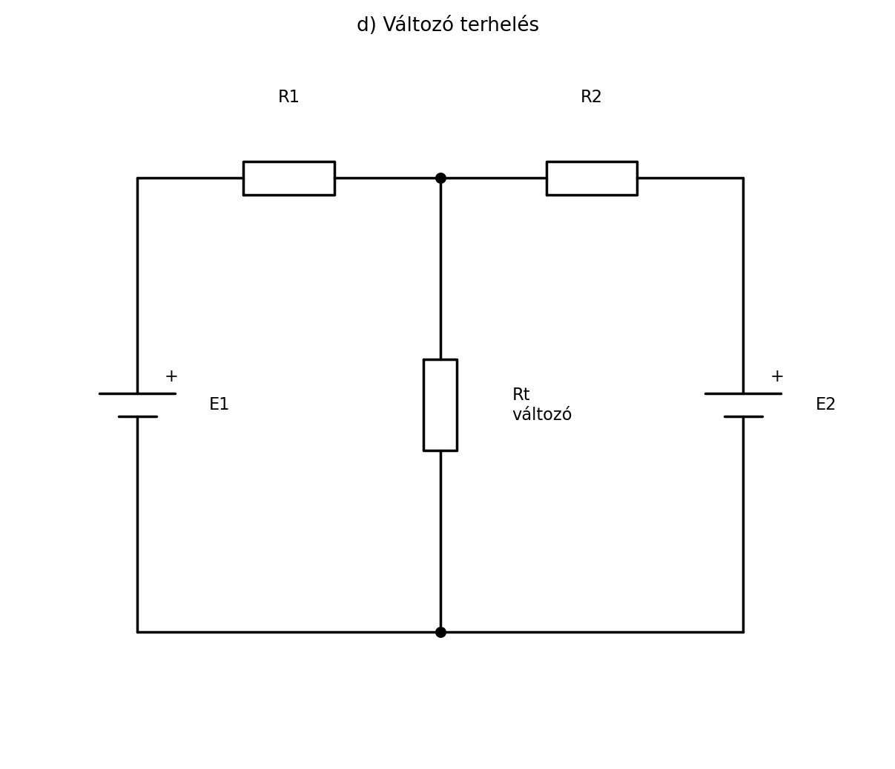

Bal hurok. Az
hurokáram körbejárása az óramutató szerint: E1-en alulról felfelé, R1-en
jobbra, R3-on lefelé. Az E1 emeli a potenciált, ezért
.
Az R1-en
feszültségesést hoz létre:
.
R3-ban lefelé az
,
felfelé az
folyik, ezért a lefelé irányú eredő áram
,
így az R3 feszültségesése
.
A hurokegyenlet:
Jobb hurok. Az
hurokáram körbejárása az óramutató szerint: R2-n jobbra, E2-n lefelé,
R3-on felfelé. Az R2-n az áram irányában haladunk, ezért a potenciál
-vel
csökken:
.
Az E2-n a pozitív kapocstól a negatív felé haladunk:
.
Az R3-on az eredő
árammal szemben haladunk felfelé, ezért a potenciál nő:
.
A hurokegyenlet:
amit rendezve:
Helyettesítsünk be:
Az első egyenletből:
A másodikból:
Ezt beírva az elsőbe:
Ezután:
Az ágáramok:
R1 árama:
,
R2 árama:
,
R3 árama lefelé:
.
Ellenőrzés a hurokegyenletekkel:
Bal hurok:
,
tehát a bal oldal valóban
.
Jobb hurok:
,
tehát a jobb oldal valóban
.
4.4.2 Gyakorló: hálózatszámítás
generátorral
A fejezet kidolgozott példája és feladatai egyetlen topológiát (két
ablak, két forrás) használnak; a vizsga „nagy” számolási feladata
viszont bármilyen kis hálózat lehet. Az alábbi generátor négy szinten,
véletlen értékekkel ad feladatot: A – egy hurok két
(egyirányú vagy szembe kapcsolt) forrással, illetve három párhuzamos ág
két csomópont között (Millman-típus); B – a fejezet
kétablakos szerkezete egy vagy két forrással, négy párhuzamos ág;
C – háromablakos létra két forrással, kiegyenlítetlen
híd ideális forrással; D – négyablakos lánc három
csomóponttal és két forrással, illetve híd második forrással a hídágban.
Az ágáramokat a rajzon jelölt referenciairányhoz képest
előjelesen kell beírni. A lap felismeri a tipikus
hibákat (csak az előjel hibás; egy forrás előjele fordítva került az
egyenletbe; szuperpozíciónál a kikapcsolt forrást szakadásnak vetted), a
lépésenkénti megoldás pedig a csomóponti potenciálok módszerét követi a
csomóponti ellenőrzéssel és a teljesítmény-mérleggel, B szinttől
szuperpozíciós, C szinttől Thevenin-ellenőrzéssel.
Statikus változat (mint a PDF-ben)
Kirchhoff-hálózatszámítás – feladatgenerátor (B-szintű
mintafeladat: két ablak, két forrás)
A nyomtatott kiadásban az alábbi nyolc rögzített feladat helyettesíti
a generátort. A hálózatok rajza és az ágáramok referenciairánya (nyíl) a
következő ábrákon látható; a kulcsban a negatív előjel a nyíllal
ellentétes áramot jelent. Minden feladatnál ellenőrizd a csomóponti
mérleget és a teljesítmény-mérleget is.

A hálózatszámítási feladatsor hálózatai (1–2.
feladat)

A hálózatszámítási feladatsor hálózatai (3–5.
feladat)

A hálózatszámítási feladatsor hálózatai (6–8.
feladat)
Rögzített feladatsor. A HTML-kiadás generátora négy
szinten végtelen sok hasonló feladatot ad; az alábbi nyolc feladat
rögzített. A hálózatok rajza és az ágáramok referenciairánya a
feladatsor előtti ábrákon látható; a kulcs előjeles (negatív: a nyíllal
ellentétes áram).
(A) Az ábrán 3 párhuzamos ág kapcsolódik a felső
(1) és az alsó (0) csomópont közé, 2 forrással: R1 = 2 Ω és
24 V-os forrás; R2 = 3 Ω és 12 V-os forrás; R3 = 6
Ω. Számítsd ki az ágáramokat a rajzon jelölt referenciairányokkal
(előjelesen)!
(B) Az ábrán 3 párhuzamos ág kapcsolódik a felső
(1) és az alsó (0) csomópont közé, 2 forrással: R1 = 4 Ω és
36 V-os forrás; R3 = 6 Ω; R2 = 6 Ω és 12 V-os
forrás. Számítsd ki az ágáramokat a rajzon jelölt referenciairányokkal
(előjelesen)!
(C) Létrahálózat: E1 = 24 V +
R1 = 2 Ω az A csomópontba; R3 = 6 Ω A–0;
R4 = 3 Ω A–B; R5 = 6 Ω B–0; E2 = 12 V +
R2 = 4 Ω a B csomópontba. Számítsd ki az ágáramokat
előjelesen!
(C) Létrahálózat: E1 = 48 V +
R1 = 4 Ω az A csomópontba; R3 = 8 Ω A–0;
R4 = 4 Ω A–B; R5 = 8 Ω B–0; E2 = 24 V +
R2 = 2 Ω a B csomópontba. Számítsd ki az ágáramokat
előjelesen!
(C) Kiegyenlítetlen híd: az ideális 12 V-os forrás
a T csomópont és a 0 között; R1 = 10 Ω (T–A), R2 =
20 Ω (A–0), R3 = 30 Ω (T–B), R4 = 40 Ω (B–0),
R5 = 50 Ω (A–B hídág). Számítsd ki a forrás áramát és az
ágáramokat előjelesen!
(D) Négyablakos lánc: E1 = 30 V +
Ra = 2 Ω az 1. csomópontba; R1 = 10 Ω 1–0;
R12 = 4 Ω; R2 = 5 Ω 2–0; R23 = 4 Ω;
R3 = 10 Ω 3–0; E3 = 10 V + Rb = 2 Ω a
3. csomópontba. Számítsd ki az ágáramokat előjelesen!
(B) Az ábrán 4 párhuzamos ág kapcsolódik a felső
(1) és az alsó (0) csomópont közé, 3 forrással: R1 = 1 Ω és
12 V-os forrás; R2 = 2 Ω és 6 V-os forrás; R3 = 3
Ω és 9 V-os forrás; R4 = 6 Ω. Számítsd ki az ágáramokat a
rajzon jelölt referenciairányokkal (előjelesen)!
(D) Híd két forrással: E1 = 24 V +
Rs = 1 Ω a T csomópontba; R1 = 10 Ω (T–A),
R2 = 20 Ω (A–0), R3 = 30 Ω (T–B), R4 =
40 Ω (B–0), R5 = 50 Ω (A–B hídág), a hídágban az
R5-tel sorosan egy 6 V-os forrás, amely A felől B felé emeli
a potenciált. Számítsd ki az ágáramokat előjelesen!
Referencia: a 0 csomópont (alsó sín) potenciálja 0 V. Ismeretlen:
φ1. Az ágáramok referenciairánya a rajz nyila; I =
(φkezdő − φvég + E) / R, ahol E-t pozitívnak
vesszük, ha a nyíl irányában a forrás pozitív kapcsa felé
haladunk.
Csomóponti egyenlet (1, a kifolyó áramok összege 0): (φ1 − 24
V) / 2 Ω + (φ1 − 12 V) / 3 Ω + (φ1) / 6 Ω =
0.
Megoldás: φ1 = 16 V.
I1 = (φ0 − φ1 + 24 V) / 2 Ω = (0 V − 16
V + 24 V) / 2 Ω = 4 A.
I2 = (φ0 − φ1 + 12 V) / 3 Ω = (0 V − 16
V + 12 V) / 3 Ω = −1,333 A (a nyíllal ellentétes irányú).
I3 = (φ0 − φ1) / 6 Ω = (0 V − 16 V) / 6
Ω = −2,667 A (a nyíllal ellentétes irányú).
Ellenőrzés (csomóponti törvény, kifolyó − befolyó): 1: 0 A ✓
Teljesítmény-mérleg: E (I1 ágában, 24 V): 96 W (lead); E
(I2 ágában, 12 V): −16 W (felvesz, töltődik); összesen 80 W =
Σ I2 · R = 80 W ✓
Ellenőrzés szuperpozícióval – csak a(z) I1 ágbeli 24 V-os
forrás hat (a többi rövidzár): I1′ = 6 A, I2′ = −4
A, I3′ = −2 A; csak a(z) I2 ágbeli 12 V-os forrás
hat (a többi rövidzár): I1′ = −2 A, I2′ = 2,667 A,
I3′ = −666,7 mA. Az ágáramok összege az eredeti áramokat adja
✓
Referencia: a 0 csomópont (alsó sín) potenciálja 0 V. Ismeretlen:
φ1. Az ágáramok referenciairánya a rajz nyila; I =
(φkezdő − φvég + E) / R, ahol E-t pozitívnak
vesszük, ha a nyíl irányában a forrás pozitív kapcsa felé
haladunk.
Csomóponti egyenlet (1, a kifolyó áramok összege 0): (φ1 − 36
V) / 4 Ω + (φ1) / 6 Ω + (φ1 − 12 V) / 6 Ω =
0.
Megoldás: φ1 = 18,86 V.
I1 = (φ0 − φ1 + 36 V) / 4 Ω = (0 V −
18,86 V + 36 V) / 4 Ω = 4,286 A.
I3 = (φ0 − φ1) / 6 Ω = (0 V − 18,86 V)
/ 6 Ω = −3,143 A (a nyíllal ellentétes irányú).
I2 = (φ0 − φ1 + 12 V) / 6 Ω = (0 V −
18,86 V + 12 V) / 6 Ω = −1,143 A (a nyíllal ellentétes irányú).
Ellenőrzés (csomóponti törvény, kifolyó − befolyó): 1: 0 A ✓
Teljesítmény-mérleg: E (I1 ágában, 36 V): 154,3 W (lead); E
(I2 ágában, 12 V): −13,71 W (felvesz, töltődik); összesen
140,6 W = Σ I2 · R = 140,6 W ✓
Ellenőrzés szuperpozícióval – csak a(z) I1 ágbeli 36 V-os
forrás hat (a többi rövidzár): I1′ = 5,143 A, I3′
= −2,571 A, I2′ = −2,571 A; csak a(z) I2 ágbeli 12
V-os forrás hat (a többi rövidzár): I1′ = −857,1 mA,
I3′ = −571,4 mA, I2′ = 1,429 A. Az ágáramok
összege az eredeti áramokat adja ✓
Referencia: a 0 csomópont (alsó sín) potenciálja 0 V. Ismeretlen:
φA, φB. Az ágáramok referenciairánya a rajz nyila;
I = (φkezdő − φvég + E) / R, ahol E-t pozitívnak
vesszük, ha a nyíl irányában a forrás pozitív kapcsa felé
haladunk.
Csomóponti egyenlet (A, a kifolyó áramok összege 0): (φA − 24
V) / 2 Ω + (φA) / 6 Ω + (φA − φB) / 3 Ω
= 0.
Csomóponti egyenlet (B, a kifolyó áramok összege 0): (φB −
φA) / 3 Ω + (φB) / 6 Ω + (φB − 12 V) /
4 Ω = 0.
Megoldás (Gauss-elimináció): φA = 15,65 V; φB =
10,96 V.
I1 = (φ0 − φA + 24 V) / 2 Ω = (0 V −
15,65 V + 24 V) / 2 Ω = 4,174 A.
I3 = (φA − φ0) / 6 Ω = (15,65 V − 0 V)
/ 6 Ω = 2,609 A.
I4 = (φA − φB) / 3 Ω = (15,65 V − 10,96
V) / 3 Ω = 1,565 A.
I5 = (φB − φ0) / 6 Ω = (10,96 V − 0 V)
/ 6 Ω = 1,826 A.
I2 = (φ0 − φB + 12 V) / 4 Ω = (0 V −
10,96 V + 12 V) / 4 Ω = 260,9 mA.
Ellenőrzés (csomóponti törvény, kifolyó − befolyó): A: 0 A; B: 0 A
✓
Teljesítmény-mérleg: E (I1 ágában, 24 V): 100,2 W (lead); E
(I2 ágában, 12 V): 3,13 W (lead); összesen 103,3 W = Σ
I2 · R = 103,3 W ✓
Ellenőrzés szuperpozícióval – csak a(z) I1 ágbeli 24 V-os
forrás hat (a többi rövidzár): I1′ = 4,957 A, I3′
= 2,348 A, I4′ = 2,609 A, I5′ = 1,043 A,
I2′ = −1,565 A; csak a(z) I2 ágbeli 12 V-os forrás
hat (a többi rövidzár): I1′ = −782,6 mA, I3′ =
260,9 mA, I4′ = −1,043 A, I5′ = 782,6 mA,
I2′ = 1,826 A. Az ágáramok összege az eredeti áramokat adja
✓
Thevenin-helyettesítés a(z) R2 ágra: az ágat kivéve U0 =
φ0 − φB = −10,29 V; a forrásokat rövidre zárva
RTh = 2,571 Ω; I2 = (U0 + 12 V) /
(RTh + 4 Ω) = 260,9 mA ✓
Referencia: a 0 csomópont (alsó sín) potenciálja 0 V. Ismeretlen:
φA, φB. Az ágáramok referenciairánya a rajz nyila;
I = (φkezdő − φvég + E) / R, ahol E-t pozitívnak
vesszük, ha a nyíl irányában a forrás pozitív kapcsa felé
haladunk.
Csomóponti egyenlet (A, a kifolyó áramok összege 0): (φA − 48
V) / 4 Ω + (φA) / 8 Ω + (φA − φB) / 4 Ω
= 0.
Csomóponti egyenlet (B, a kifolyó áramok összege 0): (φB −
φA) / 4 Ω + (φB) / 8 Ω + (φB − 24 V) /
2 Ω = 0.
Megoldás (Gauss-elimináció): φA = 27,87 V; φB =
21,68 V.
I1 = (φ0 − φA + 48 V) / 4 Ω = (0 V −
27,87 V + 48 V) / 4 Ω = 5,032 A.
I3 = (φA − φ0) / 8 Ω = (27,87 V − 0 V)
/ 8 Ω = 3,484 A.
I4 = (φA − φB) / 4 Ω = (27,87 V − 21,68
V) / 4 Ω = 1,548 A.
I5 = (φB − φ0) / 8 Ω = (21,68 V − 0 V)
/ 8 Ω = 2,71 A.
I2 = (φ0 − φB + 24 V) / 2 Ω = (0 V −
21,68 V + 24 V) / 2 Ω = 1,161 A.
Ellenőrzés (csomóponti törvény, kifolyó − befolyó): A: 0 A; B: 0 A
✓
Teljesítmény-mérleg: E (I1 ágában, 48 V): 241,5 W (lead); E
(I2 ágában, 24 V): 27,87 W (lead); összesen 269,4 W = Σ
I2 · R = 269,4 W ✓
Ellenőrzés szuperpozícióval – csak a(z) I1 ágbeli 48 V-os
forrás hat (a többi rövidzár): I1′ = 6,581 A, I3′
= 2,71 A, I4′ = 3,871 A, I5′ = 774,2 mA,
I2′ = −3,097 A; csak a(z) I2 ágbeli 24 V-os forrás
hat (a többi rövidzár): I1′ = −1,548 A, I3′ =
774,2 mA, I4′ = −2,323 A, I5′ = 1,935 A,
I2′ = 4,258 A. Az ágáramok összege az eredeti áramokat adja
✓
Thevenin-helyettesítés a(z) R2 ágra: az ágat kivéve U0 =
φ0 − φB = −17,45 V; a forrásokat rövidre zárva
RTh = 3,636 Ω; I2 = (U0 + 24 V) /
(RTh + 2 Ω) = 1,161 A ✓
Referencia: a 0 csomópont (alsó sín) potenciálja 0 V; a T
csomópontot az ideális forrás 12 V-on tartja. Ismeretlen: φA,
φB. Az ágáramok referenciairánya a rajz nyila; I =
(φkezdő − φvég + E) / R, ahol E-t pozitívnak
vesszük, ha a nyíl irányában a forrás pozitív kapcsa felé
haladunk.
Csomóponti egyenlet (A, a kifolyó áramok összege 0): (φA − 12
V) / 10 Ω + (φA) / 20 Ω + (φA − φB) /
50 Ω = 0.
Csomóponti egyenlet (B, a kifolyó áramok összege 0): (φB − 12
V) / 30 Ω + (φB) / 40 Ω + (φB − φA) /
50 Ω = 0.
Megoldás (Gauss-elimináció): φA = 7,897 V; φB =
7,123 V.
I (a forrás árama) = a T csomópontból kifolyó áramok összege = 572,9
mA.
I1 = (φT − φA) / 10 Ω = (12 V − 7,897
V) / 10 Ω = 410,3 mA.
I2 = (φA − φ0) / 20 Ω = (7,897 V − 0 V)
/ 20 Ω = 394,8 mA.
I3 = (φT − φB) / 30 Ω = (12 V − 7,123
V) / 30 Ω = 162,6 mA.
I4 = (φB − φ0) / 40 Ω = (7,123 V − 0 V)
/ 40 Ω = 178,1 mA.
I5 = (φA − φB) / 50 Ω = (7,897 V −
7,123 V) / 50 Ω = 15,48 mA.
Ellenőrzés (csomóponti törvény, kifolyó − befolyó): A: 0 A; B: 0 A
✓
Teljesítmény-mérleg: E (I ágában, 12 V): 6,875 W (lead); összesen 6,875
W = Σ I2 · R = 6,875 W ✓
Thevenin-helyettesítés a(z) R5 ágra: az ágat kivéve U0 =
φA − φB = 1,143 V; a forrásokat rövidre zárva
RTh = 23,81 Ω; I5 = (U0) /
(RTh + 50 Ω) = 15,48 mA ✓
Referencia: a 0 csomópont (alsó sín) potenciálja 0 V. Ismeretlen:
φ1, φ2, φ3. Az ágáramok
referenciairánya a rajz nyila; I = (φkezdő − φvég
+ E) / R, ahol E-t pozitívnak vesszük, ha a nyíl irányában a forrás
pozitív kapcsa felé haladunk.
Csomóponti egyenlet (1, a kifolyó áramok összege 0): (φ1 − 30
V) / 2 Ω + (φ1) / 10 Ω + (φ1 − φ2) / 4
Ω = 0.
Csomóponti egyenlet (2, a kifolyó áramok összege 0): (φ2 −
φ1) / 4 Ω + (φ2) / 5 Ω + (φ2 −
φ3) / 4 Ω = 0.
Csomóponti egyenlet (3, a kifolyó áramok összege 0): (φ3 −
φ2) / 4 Ω + (φ3) / 10 Ω + (φ3 − 10 V) /
2 Ω = 0.
Megoldás (Gauss-elimináció): φ1 = 20,78 V; φ2 =
10,64 V; φ3 = 9,011 V.
Ia = (φ0 − φ1 + 30 V) / 2 Ω = (0 V −
20,78 V + 30 V) / 2 Ω = 4,612 A.
I1 = (φ1 − φ0) / 10 Ω = (20,78 V − 0 V)
/ 10 Ω = 2,078 A.
I12 = (φ1 − φ2) / 4 Ω = (20,78 V −
10,64 V) / 4 Ω = 2,534 A.
I2 = (φ2 − φ0) / 5 Ω = (10,64 V − 0 V)
/ 5 Ω = 2,128 A.
I23 = (φ2 − φ3) / 4 Ω = (10,64 V −
9,011 V) / 4 Ω = 406,8 mA.
I3 = (φ3 − φ0) / 10 Ω = (9,011 V − 0 V)
/ 10 Ω = 901,1 mA.
Ib = (φ0 − φ3 + 10 V) / 2 Ω = (0 V −
9,011 V + 10 V) / 2 Ω = 494,4 mA.
Ellenőrzés (csomóponti törvény, kifolyó − befolyó): 1: 0 A; 2: 0 A; 3: 0
A ✓
Teljesítmény-mérleg: E (Ia ágában, 30 V): 138,4 W (lead); E
(Ib ágában, 10 V): 4,944 W (lead); összesen 143,3 W = Σ
I2 · R = 143,3 W ✓
Ellenőrzés szuperpozícióval – csak a(z) Ia ágbeli 30 V-os
forrás hat (a többi rövidzár): Ia′ = 5,003 A, I1′
= 1,999 A, I12′ = 3,004 A, I2′ = 1,596 A,
I23′ = 1,408 A, I3′ = 234,7 mA, Ib′ =
−1,173 A; csak a(z) Ib ágbeli 10 V-os forrás hat (a többi
rövidzár): Ia′ = −391,1 mA, I1′ = 78,22 mA,
I12′ = −469,3 mA, I2′ = 531,9 mA, I23′
= −1,001 A, I3′ = 666,5 mA, Ib′ = 1,668 A. Az
ágáramok összege az eredeti áramokat adja ✓
Thevenin-helyettesítés a(z) Rb ágra: az ágat kivéve U0 =
φ0 − φ3 = −7,036 V; a forrásokat rövidre zárva
RTh = 3,996 Ω; Ib = (U0 + 10 V) /
(RTh + 2 Ω) = 494,4 mA ✓
Referencia: a 0 csomópont (alsó sín) potenciálja 0 V. Ismeretlen:
φ1. Az ágáramok referenciairánya a rajz nyila; I =
(φkezdő − φvég + E) / R, ahol E-t pozitívnak
vesszük, ha a nyíl irányában a forrás pozitív kapcsa felé
haladunk.
Csomóponti egyenlet (1, a kifolyó áramok összege 0): (φ1 − 12
V) / 1 Ω + (φ1 − 6 V) / 2 Ω + (φ1 − 9 V) / 3 Ω +
(φ1) / 6 Ω = 0.
Megoldás: φ1 = 9 V.
I1 = (φ0 − φ1 + 12 V) / 1 Ω = (0 V − 9
V + 12 V) / 1 Ω = 3 A.
I2 = (φ0 − φ1 + 6 V) / 2 Ω = (0 V − 9 V
+ 6 V) / 2 Ω = −1,5 A (a nyíllal ellentétes irányú).
I3 = (φ0 − φ1 + 9 V) / 3 Ω = (0 V − 9 V
+ 9 V) / 3 Ω = 0 A.
I4 = (φ0 − φ1) / 6 Ω = (0 V − 9 V) / 6
Ω = −1,5 A (a nyíllal ellentétes irányú).
Ellenőrzés (csomóponti törvény, kifolyó − befolyó): 1: 0 A ✓
Teljesítmény-mérleg: E (I1 ágában, 12 V): 36 W (lead); E
(I2 ágában, 6 V): −9 W (felvesz, töltődik); E (I3
ágában, 9 V): 0 W (lead); összesen 27 W = Σ I2 · R = 27 W
✓
Ellenőrzés szuperpozícióval – csak a(z) I1 ágbeli 12 V-os
forrás hat (a többi rövidzár): I1′ = 6 A, I2′ = −3
A, I3′ = −2 A, I4′ = −1 A; csak a(z) I2
ágbeli 6 V-os forrás hat (a többi rövidzár): I1′ = −1,5 A,
I2′ = 2,25 A, I3′ = −500 mA, I4′ = −250
mA; csak a(z) I3 ágbeli 9 V-os forrás hat (a többi rövidzár):
I1′ = −1,5 A, I2′ = −750 mA, I3′ = 2,5
A, I4′ = −250 mA. Az ágáramok összege az eredeti áramokat
adja ✓
Referencia: a 0 csomópont (alsó sín) potenciálja 0 V. Ismeretlen:
φT, φA, φB. Az ágáramok
referenciairánya a rajz nyila; I = (φkezdő − φvég
+ E) / R, ahol E-t pozitívnak vesszük, ha a nyíl irányában a forrás
pozitív kapcsa felé haladunk.
Csomóponti egyenlet (T, a kifolyó áramok összege 0): (φT − 24
V) / 1 Ω + (φT − φA) / 10 Ω + (φT −
φB) / 30 Ω = 0.
Csomóponti egyenlet (A, a kifolyó áramok összege 0): (φA −
φT) / 10 Ω + (φA) / 20 Ω + (φA −
φB + 6 V) / 50 Ω = 0.
Csomóponti egyenlet (B, a kifolyó áramok összege 0): (φB −
φT) / 30 Ω + (φB) / 40 Ω + (φB −
φA − 6 V) / 50 Ω = 0.
Megoldás (Gauss-elimináció): φT = 22,9 V; φA =
14,53 V; φB = 14,99 V.
I = (φ0 − φT + 24 V) / 1 Ω = (0 V − 22,9 V + 24 V)
/ 1 Ω = 1,101 A.
I1 = (φT − φA) / 10 Ω = (22,9 V − 14,53
V) / 10 Ω = 837,2 mA.
I2 = (φA − φ0) / 20 Ω = (14,53 V − 0 V)
/ 20 Ω = 726,4 mA.
I3 = (φT − φB) / 30 Ω = (22,9 V − 14,99
V) / 30 Ω = 263,8 mA.
I4 = (φB − φ0) / 40 Ω = (14,99 V − 0 V)
/ 40 Ω = 374,6 mA.
I5 = (φA − φB + 6 V) / 50 Ω = (14,53 V
− 14,99 V + 6 V) / 50 Ω = 110,8 mA.
Ellenőrzés (csomóponti törvény, kifolyó − befolyó): T: 0 A; A: 0 A; B: 0
A ✓
Teljesítmény-mérleg: E (I ágában, 24 V): 26,42 W (lead); E
(I5 ágában, 6 V): 665 mW (lead); összesen 27,09 W = Σ
I2 · R = 27,09 W ✓
Ellenőrzés szuperpozícióval – csak a(z) I ágbeli 24 V-os forrás hat (a
többi rövidzár): I′ = 1,094 A, I1′ = 783,3 mA, I2′
= 753,7 mA, I3′ = 310,3 mA, I4′ = 339,9 mA,
I5′ = 29,56 mA; csak a(z) I5 ágbeli 6 V-os forrás
hat (a többi rövidzár): I′ = 7,389 mA, I1′ = 53,94 mA,
I2′ = −27,34 mA, I3′ = −46,55 mA, I4′ =
34,73 mA, I5′ = 81,28 mA. Az ágáramok összege az eredeti
áramokat adja ✓
Thevenin-helyettesítés a(z) R5 ágra: az ágat kivéve U0 =
φA − φB = 2,182 V; a forrásokat rövidre zárva
RTh = 23,82 Ω; I5 = (U0 + 6 V) /
(RTh + 50 Ω) = 110,8 mA ✓
4.4.3 Gyakorlati útmutató:
csomóponti és huroktörvény mérése
Cél. A csomóponti és a huroktörvény igazolása egy
kiegyenlítetlen hídon, a számolt és a mért értékek összevetése. Egyetlen
forrást használunk, mert két forrás összekötése visszatáplálási
kockázattal jár (lásd a Valós esetet).
Eszközök és anyagok. Labortáp 0–15 V, 100 mA-re
állított áramkorláttal; 2 multiméter; dugaszolós laborpanel; 0,5 W-os
ellenállások:
,
,
,
,
(hídág).
Biztonsági korlát. A feladat tanműhelyi
(törpefeszültségű) környezetre vagy jogosult oktató felügyeletére
vonatkozik; hálózati feszültségen önállóan ne végezd.
Az öt biztonsági szabály a tanműhelyi tápon.
Kapcsold le a tápot (a kimenetét is).
Biztosítsd visszakapcsolás ellen (a tápvezetéket húzd ki, és tartsd
magadnál).
Ellenőrizd a panelen a feszültségmentességet voltmérővel.
Földelés és rövidre zárás: ezen az ELV-laborkörön nem alkalmazzuk,
és ezt a jegyzőkönyvben is mondd ki.
A szomszédos, feszültség alatt maradó labortápokat és csatlakozókat
takard le vagy távolítsd el.
Előkészítés: a várt értékek (csomóponti potenciálok
módszerével,
,
a hídrajz a Vegyes kapcsolások és eredő ellenállás (tankönyv, 4.3)
alfejezet szerinti):
A híd várt feszültségei és áramai
Mennyiség
Számolt érték
8,15 V
7,33 V
(forrás)
52,6 mA
38,5 mA
37,0 mA
14,1 mA
15,6 mA
(A-ból B felé)
1,46 mA
Lépések.
Feszültségmentes panelen építsd meg a hidat: R1 a táp pozitív pontja
és A, R2 A és a közös alsó sín, R3 a pozitív pont és B, R4 B és az alsó
sín, R5 A és B között. Ellenőriztesd, állítsd be az áramkorlátot, majd
kapcsold be a tápot.
A voltmérő fekete zsinórját tartsd a közös alsó sínen (COM, ez a
vonatkoztatási pont), és mérd a
,
és a tápláló pont potenciálját.
Mérd meg mind az öt ellenállás feszültségét a két kapcsa között, a
polaritást is jegyezve.
Az áramokat az ág megbontásával mérd: kapcsold le a tápot, bontsd
meg az ágat, iktasd be sorosan az árammérőt (mA hüvely, megfelelő
méréshatár), és csak ezután kapcsold be. Minden átkötés előtt ismét
kapcsold le.
Ellenőrizd a csomóponti törvényt A-ban:
;
és a huroktörvényt a felső hurokban:
.
Számold ki az eltéréseket százalékban, és magyarázd meg őket (az
ellenállások tűrése, például 5 %; a műszerek hibája; az árammérő belső
ellenállása).
Ellenőrzési pontok. A mért áramokkal a csomóponti
mérleg eltérése 2 % alatt legyen (példaadat; a kis hídáram mérési hibája
nagyobb lehet, de a mérlegben keveset számít). R1 teljesítménye kb.
0,148 W, tehát a 0,5 W-os alkatrész megfelelő. A forrásáram egyezzen az
összeggel.
Tipikus hibák. Áramméréshez a zsinór a V-hüvelyben
marad (vagy fordítva: feszültségmérés az áramhüvelyből, ami rövidzár); a
hídág kis áramát durva méréshatáron méred; nem rögzíted a mérési irányt
és az előjelet, ezért a mérleg „nem jön ki”.
Dokumentálás. Rajzold le a kapcsolást a
referenciairányokkal, töltsd ki a jegyzőkönyvet, és írj kétmondatos
következtetést.
Mérési jegyzőkönyv (kitöltendő)
Mennyiség
Számolt
Mért
Eltérés, %
,
V
8,15
,
V
7,33
,
mA
52,6
,
mA
38,5
,
mA
37,0
,
mA
14,1
,
mA
15,6
,
mA
1,46
,
V
0
–
,
mA
0
–
4.4.4 Önellenőrzés
Egy csomópontba 2 A folyik be, és két elmenő vezetéken 0,8 A,
valamint 0,5 A folyik ki. Mekkora a harmadik elmenő áram?
Érvényes-e a huroktörvény, ha a hurokban egy szakadás (nyitott
kapcsoló) van? Mekkora feszültség mérhető a szakadáson?
Szuperpozíció alkalmazásakor hogyan kell egy nem vizsgált
feszültségforrást kezelni?
Egy hurokban egy 9 V-os forrás van egy 3 Ω-os és egy 6 Ω-os
ellenállással sorosan. Mekkora a hurokáram?
Mi a teljesítménymérleg szerepe a hálózatszámításban?
Mi a hiba az alábbi állításban: „Kirchhoff II. törvénye szerint a
hurokban a feszültségek abszolút értékeinek összege nulla”?
4.4.5 Feladatok
1. feladat (A)
Egy csomópontba 4,5 A folyik be. Két kimenő vezetéken 1,2 A és 2,1 A
folyik. Mekkora a harmadik kimenő vezeték árama?
2. feladat (A)
Egy soros áramkörben
,
és
.
Írd fel a hurokegyenletet, és add meg az áramerősséget!
3. feladat (B)
Adott az alábbi hálózat:
,
,
,
,
,
a topológia megegyezik a fejezet ábrájával. Hurokáramok módszerével
számítsd ki az R1, R2 és R3 áramát, és jelöld az irányt!
4. feladat (B)
Oldd meg a 3. feladat hálózatát szuperpozícióval, és vesd össze a kapott
áramokat!
5. feladat (C)
A 3. feladat eredményeit ellenőrizd teljesítménymérleggel. Melyik forrás
ad le teljesítményt, és melyik viselkedik fogyasztóként?
6. feladat (D)
Egy egyfázisú alelosztó betápláló fázisvezetőjében 10 A,
nullavezetőjében 9,5 A folyik (lakatfogóval mérve). A három leágazó kör
fázisáramai: 3 A, 4 A és 2 A. a) Mit mond a csomóponti törvény a
fázisoldalon? b) Hová folyhat a fázis- és a nullaáram 0,5 A-es
különbsége?
7. feladat (B)
Két csomópont között három párhuzamos ág van: 12 V-os forrás 2 Ω-mal, 6
V-os forrás 4 Ω-mal (mindkét forrás pozitív kapcsa a felső csomópont
felé néz) és egy 8 Ω-os ellenállás. Számítsd ki csomóponti módszerrel a
felső csomópont potenciálját és az ágáramokat!
8. feladat (C)
Létrahálózat:
és
az A csomópontba táplál;
A és az alsó sín (0 V) között;
A és B között;
B és az alsó sín között;
és
a B csomópontba táplál. Írd fel a két csomóponti egyenletet, számítsd ki
,
értékét és az ágáramokat, majd ellenőrizd a teljesítménymérleggel!
9. feladat (B)
Határozd meg a 3. feladat hálózatának Thevenin-helyettesítőjét az R3
kapcsai felől, és számítsd ki belőle R3 áramát!
10. feladat (C)
Egy feszültségosztó 24 V-ról működik, a felső ellenállás 1 kΩ, az alsó 2
kΩ, a kimenet az alsó ellenállás két kapcsa. Add meg a kimenet
Thevenin-adatait, majd a kimeneti feszültséget 1 kΩ-os terhelésnél! Vesd
össze a Soros kapcsolás és feszültségosztó (tankönyv, 4.1) alfejezet
terhelt osztójával.
4.4.6 Megoldások
4.4.6.1 Önellenőrzés –
válaszok
A csomóponti törvény alapján:
,
tehát
.
Igen. A körüljárás a szakadás két kapcsa között is felírható; mivel
áram nem folyik, az ellenállásokon nem esik feszültség, ezért a
huroktörvény szerint a teljes forrásfeszültség a szakadáson mérhető. Ezt
használjuk a feszültségméréses hibakeresésnél (lásd a Soros kapcsolás és
feszültségosztó (tankönyv, 4.1) 6. feladatát).
A nem vizsgált feszültségforrást rövidzárral kell helyettesíteni: a
kikapcsolt ideális feszültségforrás feszültsége nulla, belső ellenállása
is nulla, tehát rövidzárként viselkedik.
Soros körben:
.
A teljesítménymérleg független ellenőrzést ad: a források által
leadott teljesítmények összegének egyenlőnek kell lennie az
ellenállásokon disszipált teljesítmények összegével.
Nem az abszolút értékek összege nulla, hanem az előjeles
feszültségek összege; az előjelek a körbejárási irányból
következnek.
4.4.6.2 Feladatok megoldása
1. feladat
A csomóponti törvény: befolyó 4,5 A, kifolyó 1,2 A, 2,1 A és I.
Tehát:
2. feladat
A hurokegyenlet:
,
azaz
.
Ezért:
3. feladat
Az egyenletrendszer ugyanolyan szerkezetű, mint a fejezetben:
Behelyettesítve:
Az első egyenletet 2-vel elosztva:
.
A másodikat 3-mal osztva:
,
ahonnan
.
5. feladat
Teljesítmények:
;
;
R1:
;
R2:
;
R3:
.
A források összege:
.
Az ellenállások összege:
.
Az E1 lead, az E2 felvesz (fogyasztóként viselkedik).
6. feladat
a)
:
1 A-t egy nem mért (pl. elfelejtett) leágazás visz el, vagy mérési hiba
van – a csomópontban áram nem tűnik el. b) A visszatérő áram 0,5 A-rel
kevesebb, mint a betáplált: ez az áram nem a nullavezetőn, hanem a
védővezetőn vagy a földön át záródik – testzárlat, szigetelési hiba vagy
hibás N–PE összekötés (szivárgó áram). Egy 30 mA-es áram-védőkapcsoló
ekkora különbségnél kioldana; ha nincs, a hibát szigetelésméréssel kell
felkutatni (lásd a Mérések I.: folytonosság, szigetelési ellenállás,
földelés (tankönyv, 24.2) alfejezetet).
7. feladat
.
A csomópont felé folyó áramok:
és
(a 6 V-os forrás töltődik); a 8 Ω-ban lefelé
.
Ellenőrzés:
.
8. feladat
A két egyenlet (a kifolyó áramok összege nulla):
Rendezve:
és
.
Ebből
,
.
Ágáramok: R1:
;
R3:
;
R4 (A-ból B felé):
;
R5:
;
R2 (E2-től B felé):
.
Teljesítménymérleg:
,
az öt ellenállás
összege szintén 51,8 W.
10. feladat
;
.
1 kΩ-os terhelésnél
.
Ellenőrzés a terhelt osztóval: az alsó eredő
,
.
4.4.7 Gyakorló: melyik
módszer?
A négy rajznál ne számolj: csak a módszert és az ismeretlenek számát
add meg.

a) Híd: R1/R2 = R3/R4 - Egy forrás, mind
az öt ellenállás értéke adott; 10/20 = 30/60. Kérdés: az eredő
ellenállás.

b) Híd: R1/R2 ≠ R3/R4 - Ugyanaz a
kapcsolás R4 = 40 Ω értékkel. Kérdés: a hídág árama.

c) Két forrás, három párhuzamos ág -
Kérdés: a közös csomóponti feszültség és az ágáramok.

d) Változó terhelés - Kérdés: Rt árama
húsz különböző Rt értékre.
Megoldókulcs. a) A híd kiegyenlített, a hídág
elhagyható: eredő ellenállás, ismeretlen nem kell. b) Csillag–delta
átalakítás (0 ismeretlen), vagy csomóponti potenciál 2 egyenlettel
(,
).
c) Millman-tétel, 1 ismeretlen. d) Thevenin-helyettesítés az Rt kapcsai
felől: egyszer
és
,
utána értékenként egy osztás.
4.4.8 Kirchhoff I. törvénye: a
csomóponti törvény – példák és gyakorlók
Példa. Egy elosztó csomópontjába 3 A folyik be, két
elmenő kör pedig 1,2 A és 1,8 A áramot visz. A harmadik elmenő kör
árama:
Ha a mért érték mégsem nulla, akkor valamelyik körben hiba van, vagy
van egy nem mért (elfelejtett) leágazás.
4.4.9 Kirchhoff II. törvénye: a
huroktörvény – példák és gyakorlók
Előjelkonvenció a példákhoz. Körbejárva a
potenciálváltozásokat adjuk össze: forráson negatívtól pozitív felé
haladva
,
ellenálláson az áram irányában
,
az árammal szemben
;
az összeg nulla. Ha a forrásokat átrendezzük a másik oldalra, ugyanez a
„forrás = ellenállásokon eső feszültségek összege” alakot adja (így
íródik a bal hurok egyenlete); a két alak egyenértékű, csak az előjelek
helye különbözik.
4.4.10 Csomóponti potenciálok
módszere – példák és gyakorlók
Kidolgozott példa a fejezet kapcsolásán. Az alsó sín
0 V, a felső csomópont
.
A csomópontból kiinduló ágakban a forrás a kiindulás felé emel, ezért a
felírásban
negatív előjellel szerepel: az R1-ágon kifolyó áram
.
A három kifolyó áram összege nulla; átrendezve, a bal oldalon a befolyó,
a jobb oldalon az R3-ban elfolyó árammal:
Az ágáramok:
a csomópont felé,
a csomópont felé, vagyis 0,286 A folyik az E2 pozitív kapcsa felé (a
forrás töltődik),
lefelé.
Ez megegyezik a hurokáramos eredménnyel; a teljesítménymérleget a
következő szakasz mutatja.
Példa. Három ág: 24 V és 2 Ω, 12 V és 3 Ω, 0 V és 6
Ω:
Szerelői alkalmazás: párhuzamosan kötött akkumulátorok vagy
tápegységek közös kapocsfeszültsége így számítható, ahol
a belső és a vezeték-ellenállás (lásd a Valódi feszültségforrás:
üresjárás, rövidzárás és illesztés (tankönyv, 4.5) alfejezetet).
4.4.11 Helyettesítő generátor:
Thevenin és Norton – példák és gyakorlók
Kidolgozott példa. A fejezet kapcsolásában az R3-at
tekintsük terhelésnek, kapcsai a és b.
Példa (példaadat). Egy 12 V-os akkumulátor
kapocsfeszültsége 1 Ω-os terhelésen 11,6 V, 0,5 Ω-oson 11,2 V.
,
,
ezért
és
.
A módszert a Valódi feszültségforrás: üresjárás, rövidzárás és illesztés
(tankönyv, 4.5) alfejezet viszi tovább.